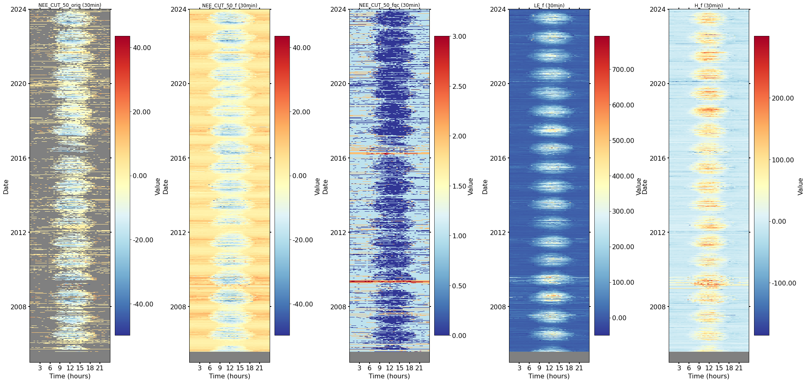
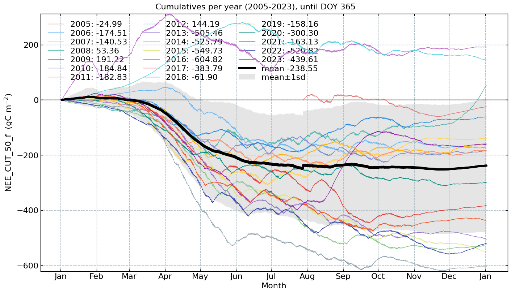

Imports#
import pandas as pd
from diive.core.times.times import insert_timestamp
from diive.core.io.files import save_parquet, load_parquet
Load REddyProc results#
nee50_df = pd.read_csv("33.02_FLUXES_L4.1_MDSgapfilled_NEE_CUT_50_20241205130350.csv")
nee16_df = pd.read_csv("33.04_FLUXES_L4.1_MDSgapfilled_NEE_CUT_16_20241205130356.csv")
nee84_df = pd.read_csv("33.06_FLUXES_L4.1_MDSgapfilled_NEE_CUT_84_20241205130404.csv")
le_df = pd.read_csv("33.08_FLUXES_L4.1_MDSgapfilled_LE_20241205130412.csv")
h_df = pd.read_csv("33.10_FLUXES_L4.1_MDSgapfilled_H_20241205130420.csv")
# [c for c in h_df.columns if str(c).startswith("H_")]
# [print(c) for c in nee50_df.columns];
Format results#
def format(df: pd.DataFrame, keepcols: str):
# Format timestamp to show middle of averaging interval:
df = df.set_index("TIMESTAMP")
df.index.name = "TIMESTAMP_END"
df.index = pd.to_datetime(df.index, format='ISO8601')
df = df.asfreq("30min")
df = insert_timestamp(data=df, convention="middle", set_as_index=True)
# Keep columns
keep = [c for c in df.columns if str(c).startswith(keepcols)]
df = df[keep].copy()
# # Rename flux partitioning columns:
# fpcols = [c for c in df.columns if "FP_" in c]
# fpcols_renamed = [f"{c}_{suffix}" for c in fpcols]
# rename_dict = dict(zip(fpcols, fpcols_renamed)) # using dict() and zip() to convert lists to dictionary
# df = df.rename(columns=rename_dict, inplace=False)
return df
nee16_df = format(df=nee16_df, keepcols="NEE_")
nee50_df = format(df=nee50_df, keepcols="NEE_")
nee84_df = format(df=nee84_df, keepcols="NEE_")
le_df = format(df=le_df, keepcols="LE_")
h_df = format(df=h_df, keepcols="H_")
nee50_df
| NEE_CUT_50_orig | NEE_CUT_50_f | NEE_CUT_50_fqc | NEE_CUT_50_fall | NEE_CUT_50_fall_qc | NEE_CUT_50_fnum | NEE_CUT_50_fsd | NEE_CUT_50_fmeth | NEE_CUT_50_fwin | |
|---|---|---|---|---|---|---|---|---|---|
| TIMESTAMP_MIDDLE | |||||||||
| 2005-01-01 00:15:00 | NaN | NaN | NaN | NaN | NaN | NaN | NaN | NaN | NaN |
| 2005-01-01 00:45:00 | NaN | NaN | NaN | NaN | NaN | NaN | NaN | NaN | NaN |
| 2005-01-01 01:15:00 | NaN | NaN | NaN | NaN | NaN | NaN | NaN | NaN | NaN |
| 2005-01-01 01:45:00 | NaN | NaN | NaN | NaN | NaN | NaN | NaN | NaN | NaN |
| 2005-01-01 02:15:00 | NaN | NaN | NaN | NaN | NaN | NaN | NaN | NaN | NaN |
| ... | ... | ... | ... | ... | ... | ... | ... | ... | ... |
| 2023-12-31 21:45:00 | NaN | 1.262247 | 1.0 | 1.262247 | 1.0 | 2.0 | 0.101649 | 1.0 | 14.0 |
| 2023-12-31 22:15:00 | NaN | -4.601671 | 1.0 | -4.601671 | 1.0 | 3.0 | 10.156859 | 1.0 | 14.0 |
| 2023-12-31 22:45:00 | NaN | -4.601671 | 1.0 | -4.601671 | 1.0 | 3.0 | 10.156859 | 1.0 | 14.0 |
| 2023-12-31 23:15:00 | 1.190371 | 1.190371 | 0.0 | -4.601671 | 1.0 | 3.0 | 10.156859 | 1.0 | 14.0 |
| 2023-12-31 23:45:00 | 1.334124 | 1.334124 | 0.0 | -4.601671 | 1.0 | 3.0 | 10.156859 | 1.0 | 14.0 |
333072 rows × 9 columns
Merge REddyProc results#
merged = nee50_df.copy()
newcols = [c for c in nee16_df.columns if c not in merged.columns]
merged = pd.concat([merged, nee16_df[newcols]], axis=1)
newcols = [c for c in nee84_df.columns if c not in merged.columns]
merged = pd.concat([merged, nee84_df[newcols]], axis=1)
newcols = [c for c in le_df.columns if c not in merged.columns]
merged = pd.concat([merged, le_df[newcols]], axis=1)
newcols = [c for c in h_df.columns if c not in merged.columns]
merged = pd.concat([merged, h_df[newcols]], axis=1)
merged
| NEE_CUT_50_orig | NEE_CUT_50_f | NEE_CUT_50_fqc | NEE_CUT_50_fall | NEE_CUT_50_fall_qc | NEE_CUT_50_fnum | NEE_CUT_50_fsd | NEE_CUT_50_fmeth | NEE_CUT_50_fwin | NEE_CUT_16_orig | NEE_CUT_16_f | NEE_CUT_16_fqc | NEE_CUT_16_fall | NEE_CUT_16_fall_qc | NEE_CUT_16_fnum | ... | LE_fall | LE_fall_qc | LE_fnum | LE_fsd | LE_fmeth | LE_fwin | H_orig | H_f | H_fqc | H_fall | H_fall_qc | H_fnum | H_fsd | H_fmeth | H_fwin | |
|---|---|---|---|---|---|---|---|---|---|---|---|---|---|---|---|---|---|---|---|---|---|---|---|---|---|---|---|---|---|---|---|
| TIMESTAMP_MIDDLE | |||||||||||||||||||||||||||||||
| 2005-01-01 00:15:00 | NaN | NaN | NaN | NaN | NaN | NaN | NaN | NaN | NaN | NaN | NaN | NaN | NaN | NaN | NaN | ... | NaN | NaN | NaN | NaN | NaN | NaN | NaN | NaN | NaN | NaN | NaN | NaN | NaN | NaN | NaN |
| 2005-01-01 00:45:00 | NaN | NaN | NaN | NaN | NaN | NaN | NaN | NaN | NaN | NaN | NaN | NaN | NaN | NaN | NaN | ... | NaN | NaN | NaN | NaN | NaN | NaN | NaN | NaN | NaN | NaN | NaN | NaN | NaN | NaN | NaN |
| 2005-01-01 01:15:00 | NaN | NaN | NaN | NaN | NaN | NaN | NaN | NaN | NaN | NaN | NaN | NaN | NaN | NaN | NaN | ... | NaN | NaN | NaN | NaN | NaN | NaN | NaN | NaN | NaN | NaN | NaN | NaN | NaN | NaN | NaN |
| 2005-01-01 01:45:00 | NaN | NaN | NaN | NaN | NaN | NaN | NaN | NaN | NaN | NaN | NaN | NaN | NaN | NaN | NaN | ... | NaN | NaN | NaN | NaN | NaN | NaN | NaN | NaN | NaN | NaN | NaN | NaN | NaN | NaN | NaN |
| 2005-01-01 02:15:00 | NaN | NaN | NaN | NaN | NaN | NaN | NaN | NaN | NaN | NaN | NaN | NaN | NaN | NaN | NaN | ... | NaN | NaN | NaN | NaN | NaN | NaN | NaN | NaN | NaN | NaN | NaN | NaN | NaN | NaN | NaN |
| ... | ... | ... | ... | ... | ... | ... | ... | ... | ... | ... | ... | ... | ... | ... | ... | ... | ... | ... | ... | ... | ... | ... | ... | ... | ... | ... | ... | ... | ... | ... | ... |
| 2023-12-31 21:45:00 | NaN | 1.262247 | 1.0 | 1.262247 | 1.0 | 2.0 | 0.101649 | 1.0 | 14.0 | NaN | 1.348560 | 1.0 | 1.348560 | 1.0 | 3.0 | ... | -1.72376 | 1.0 | 3.0 | 1.444758 | 1.0 | 14.0 | NaN | -15.399825 | 1.0 | -15.399825 | 1.0 | 12.0 | 12.555280 | 1.0 | 14.0 |
| 2023-12-31 22:15:00 | NaN | -4.601671 | 1.0 | -4.601671 | 1.0 | 3.0 | 10.156859 | 1.0 | 14.0 | NaN | -3.070957 | 1.0 | -3.070957 | 1.0 | 4.0 | ... | -1.72376 | 1.0 | 3.0 | 1.444758 | 1.0 | 14.0 | -28.038447 | -28.038447 | 0.0 | -14.101359 | 1.0 | 15.0 | 11.454304 | 1.0 | 14.0 |
| 2023-12-31 22:45:00 | NaN | -4.601671 | 1.0 | -4.601671 | 1.0 | 3.0 | 10.156859 | 1.0 | 14.0 | NaN | -3.070957 | 1.0 | -3.070957 | 1.0 | 4.0 | ... | -1.72376 | 1.0 | 3.0 | 1.444758 | 1.0 | 14.0 | -29.190743 | -29.190743 | 0.0 | -14.101359 | 1.0 | 15.0 | 11.454304 | 1.0 | 14.0 |
| 2023-12-31 23:15:00 | 1.190371 | 1.190371 | 0.0 | -4.601671 | 1.0 | 3.0 | 10.156859 | 1.0 | 14.0 | 1.190371 | 1.190371 | 0.0 | -3.070957 | 1.0 | 4.0 | ... | -1.72376 | 1.0 | 3.0 | 1.444758 | 1.0 | 14.0 | -31.241158 | -31.241158 | 0.0 | -14.101359 | 1.0 | 15.0 | 11.454304 | 1.0 | 14.0 |
| 2023-12-31 23:45:00 | 1.334124 | 1.334124 | 0.0 | -4.601671 | 1.0 | 3.0 | 10.156859 | 1.0 | 14.0 | 1.334124 | 1.334124 | 0.0 | -3.070957 | 1.0 | 4.0 | ... | -1.72376 | 1.0 | 3.0 | 1.444758 | 1.0 | 14.0 | -38.598898 | -38.598898 | 0.0 | -14.101359 | 1.0 | 15.0 | 11.454304 | 1.0 | 14.0 |
333072 rows × 45 columns
Export#
filename = "33.12_REddyProc_L4.1"
merged.to_csv(f"{filename}.csv", index=True)
save_parquet(data=merged, filename=filename)
Saved file 33.12_REddyProc_L4.1.parquet (0.490 seconds).
'33.12_REddyProc_L4.1.parquet'
Plots#
# merged['NEE_CUT_50_orig'].groupby(merged.index.year).count()
from diive.core.plotting.heatmap_datetime import HeatmapDateTime
import matplotlib.pyplot as plt
import matplotlib.gridspec as gridspec
fig = plt.figure(facecolor='white', figsize=(27, 13.5), dpi=72)
gs = gridspec.GridSpec(1, 5) # rows, cols
gs.update(wspace=0.6, hspace=0.1, left=0.03, right=0.97, top=0.95, bottom=0.05)
ax1 = ax_series = fig.add_subplot(gs[0, 0])
ax2 = ax_series = fig.add_subplot(gs[0, 1])
ax3 = ax_series = fig.add_subplot(gs[0, 2])
ax4 = ax_series = fig.add_subplot(gs[0, 3])
ax5 = ax_series = fig.add_subplot(gs[0, 4])
HeatmapDateTime(series=merged['NEE_CUT_50_orig'], ax=ax1).plot()
HeatmapDateTime(series=merged['NEE_CUT_50_f'], ax=ax2).plot()
HeatmapDateTime(series=merged['NEE_CUT_50_fqc'], ax=ax3).plot()
HeatmapDateTime(series=merged['LE_f'], ax=ax4).plot()
HeatmapDateTime(series=merged['H_f'], ax=ax5).plot()

from diive.core.plotting.cumulative import CumulativeYear
series = merged['NEE_CUT_50_f'].copy()
# series = df['NEE_CUT_REF_f'].copy()
series = series.multiply(0.02161926) # umol CO2 m-2 s-1 --> g C m-2 30min-1
series_units = r'($\mathrm{gC\ m^{-2}}$)'
# series_units = '(umol CO2 m-2 s-1)'
# series = df['VPD_f'].copy()
# series_units = '(hPa)'
# series = df['Tair_f'].copy()
# series_units = '(°C)'
CumulativeYear(
series=series,
series_units=series_units,
yearly_end_date=None,
# yearly_end_date='08-11',
start_year=2005,
end_year=2023,
show_reference=True,
excl_years_from_reference=None,
# excl_years_from_reference=[2022],
# highlight_year=2022,
highlight_year_color='#F44336').plot()
F:\Sync\luhk_work\20 - CODING\21 - DIIVE\diive\diive\core\plotting\cumulative.py:145: UserWarning: FigureCanvasAgg is non-interactive, and thus cannot be shown
self.fig.show()
